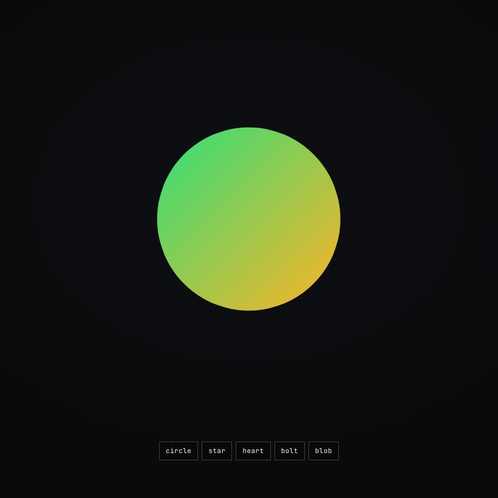
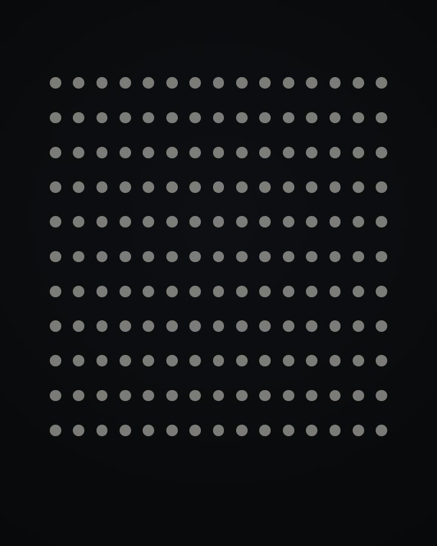
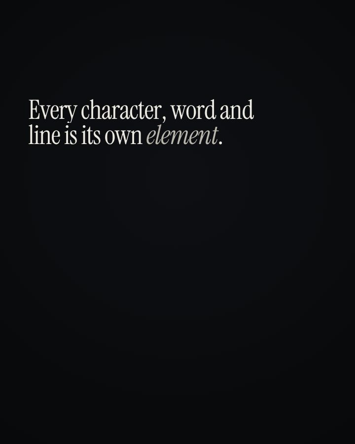
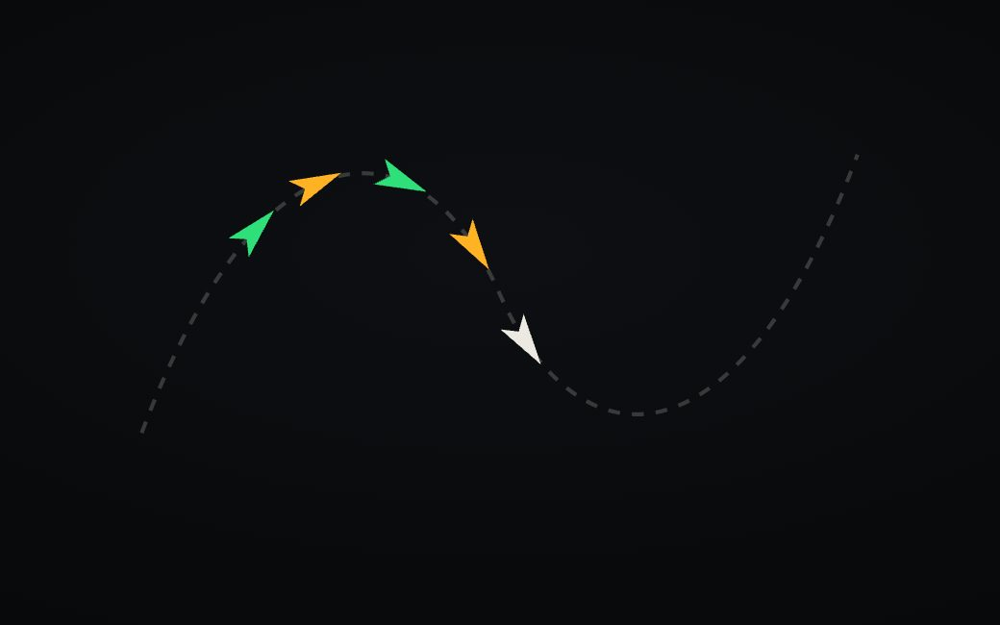

Each lab maps one technology end to end. Studies sit in a masonry grid, grouped by concern. Click a card and it comes alive in place; click away and it rests. Open any study for its parameters, the API it uses, and the code.




Tweens, timelines, easing, ScrollTrigger, Draggable, Flip, SVG, text and physics. Every plugin in GSAP 3, each in its own study.
Enter lab →The original GPU pipeline: shaders, buffers, textures, blending, framebuffers and every extension that WebGL 1 can reach.
In progressPaths, gradients, compositing, pixel manipulation, text, transforms, OffscreenCanvas and every drawing primitive in the 2D context.
Queued